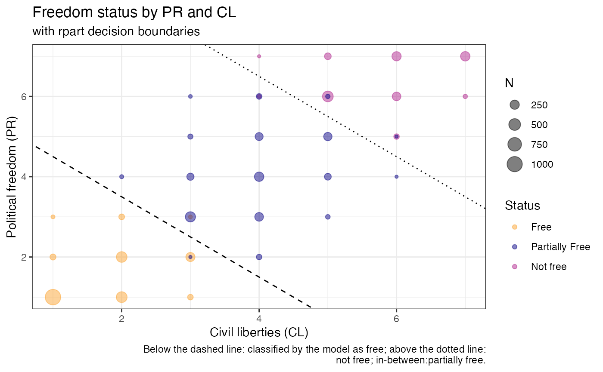

Introduction
We illustrate use of the rpart package using data from Freedom House and the United Nations to investigate the relationship between the civil liberty ranking and political rights rankings related to freedom status (“Free”,“Not free”,and “Partially Free”)?
Note that “Freedom status” is not meant to be used here a definitive measure. This system is a likely a vast over-simplication of the nuances of freedom, liberty and political climate. The data is used here to explore how these designations were created using rpart.
Data and data dictionary are available at https://github.com/rfordatascience/tidytuesday/blob/master/data/2022/2022-02-22/readme.md
Set up
Load packages
First we load the rpart package.
If rpart is not installed, install via:
install.packages("rpart")Additional packages used are:
Download data
if (!(file.exists(here("vignettes","data")))) {
dir.create(here("vignettes","data"))
if (!(file.exists(here("vignettes","data","freedom.rds")))) {
tuesdata <- tidytuesdayR::tt_load(2022, week = 8)
freedom <- tuesdata$freedom
saveRDS(freedom,here("vignettes","data","freedom.rds"))
}
} else {
freedom <- readRDS(here("vignettes","data","freedom.rds"))
}The data set spans 26 years and consists of 193 countries.
Plotting country freedom status, we can see that many countries in North America, Europe, South and western South America, Southern Africa, and Australia are classified as “Free”. Many African, west Asian, and eastern European counties are classified “Not free”.
world_map <- map_data("world")
freedom_2020_plot <- freedom %>%
filter(year==2020) %>%
mutate(region=case_when(
country=="United States of America" ~ "USA",
grepl("Kingdom",country) ~ "UK",
grepl("Antigua",country) ~ "Antigua",
grepl("Bolivia",country) ~ "Bolivia",
grepl("Iran",country) ~ "Iran",
grepl("Lao",country) ~ "Laos",
country=="Democratic People's Republic of Korea" ~ "North Korea",
country=="Republic of Korea" ~ "South Korea",
country=="Viet Nam" ~ "Vietnam",
country=="Czechia" ~ "Czech Republic",
country=="Cabo Verde" ~ "Cape Verde",
country=="Congo" ~ "Democratic Republic of the Congo",
grepl("Russia",country) ~ "Russia",
grepl("Venezuela",country) ~ "Venezuela",
grepl("Brunei",country) ~ "Brunei",
grepl("Tanzania",country) ~ "Tanzania",
country=="Syrian Arab Republic" ~ "Syria",
country=="Republic of Moldova" ~ "Moldova",
country=="Côte d’Ivoire"~ "Ivory Coast",
TRUE ~ country)) %>% select(region,Status)
world_map <- world_map %>% left_join(freedom_2020_plot,by="region")
distinct(world_map, region,Status) %>%
ggplot(aes(fill=Status,map_id = region)) +
geom_map(map = world_map) +
theme_bw() +
expand_limits(x = world_map$long, y = world_map$lat) +
ylab("Latitude") +
xlab("Longitude") +
labs(title="Countries by freedom status",
caption="Data comes from Freedom House via TidyTuesday") +
scale_fill_viridis_d(direction = -1,
end=.8,
option = "plasma",
breaks=c("F","PF","NF"),
labels=c("Free","Partially Free","Not free"))Plotting the distribution of the political freedom ranking and civil liberties rankings as well as the average of the two, we see that freedom status is almost entirely determined by the average of the two.
df <- freedom %>%
mutate(PR_CL = (PR + CL)/2)
value_labs<-c("CL"="Civil Liberties (CL)","PR"="Political Freedom (PR)","PR_CL"="Avg. of CL and PF (PR_CL)")
df %>%
pivot_longer(cols = c(CL,PR,PR_CL)) %>% ggplot() + geom_bar(aes(x=value,fill=Status)) + facet_grid(cols=vars(name),scale="free_x",labeller=labeller(name=value_labs)) + xlab("") +
theme_bw() +
scale_fill_viridis_d(direction = -1,
end=.8,
option = "plasma",
breaks=c("F","PF","NF"),
labels=c("Free","Partially Free","Not free"))Now we use rpart to fit a classification tree using CL
and PR as predictors.
rpart_mod <- rpart(method = "class",Status~ CL + PR + PR_CL, data=df)We can use the plot method to visualize the tree, and
see that indeed the two splits correspond to what we see in the data
above.
Finally we can check our model by plotting the data with the decision boundaries as fit by the rpart model. We can also get the predicted status from the rpart model using the predict function.
library(patchwork)
df %>%
group_by(CL,PR,Status) %>%
summarize(N=n()) %>%
ggplot() +
geom_point(aes(x=CL,y=PR,colour=Status,size = N),alpha=.5) +
theme_bw() +
geom_abline(intercept=2*2.75,slope=-1) +
geom_abline(intercept=2*5.25,slope=-1) +
scale_colour_viridis_d(direction = -1,
end=.8,
option = "plasma",
breaks=c("F","PF","NF"),
labels=c("Free","Partially Free","Not free"))
From this analysis we can confirm that the freedom status is based primarily on the average of the political and civil liberty scores. We have an accuracy of 99.6% with only 21 missclassified counties.
However, as the model is not entirely perfect, it is possible that additional predictors are used or that the models may have differed over time. We will try fitting rpart trees stratified by year.
df_pred <- df %>% mutate(rpart_pred = predict(rpart_mod,type="class"),
correct=case_when(rpart_pred==Status~ Status,
TRUE ~ "Incorrect"))
accuracy <- sum(df_pred$correct!="Incorrect")/nrow(df_pred)
preds_by_year <- df_pred %>% split(df_pred$year) %>% purrr::map(\(df) rpart(Status ~ PR_CL, data = df)) %>%
purrr::map_dbl(\(model) sum(as.integer(predict(model,type="class")) ==model$y)/length(model$y))
plot(names(preds_by_year),preds_by_year,ylab="Accuracy",xlab="Year")All years after 2002 have 100% accuracy indicating that we have figured out how status is determined (either entirely or sufficiently well). However,in 2002 and earlier there is some level of missclassification. In order to figure out how status is determined in these years, we would have to dig deeper into the data or documentation.